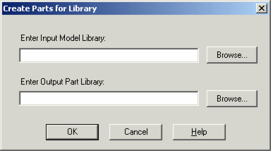
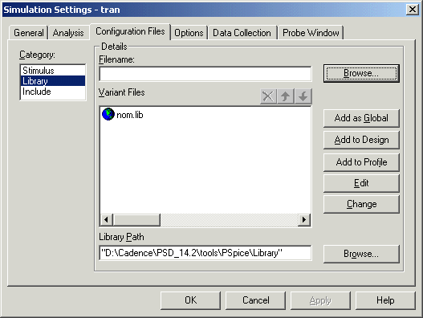
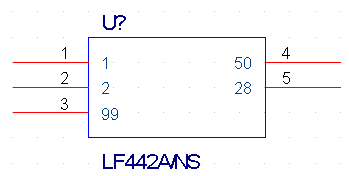
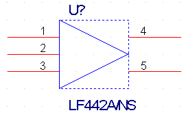
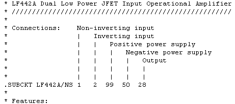
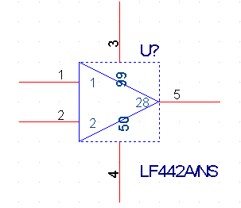

C
This appendix covers the process to be followed for importing Spice models downloaded from a web site, into PSpice and making them ready to be used in a circuit. The sections covered in this appendix are:
Usually, the Spice models downloaded from a Vendor's web site cannot be used directly in PSpice. This document covers the steps to be covered before you can successfully use the downloaded models for designing your circuits.
Before you can use the simulation models downloaded from a web site in your design, you need to perform following steps:
To import the downloaded Spice models into PSpice, you need to perform the following steps.
Note: Renaming is required only if the downloaded model does not have a .MOD extension. For example, renaming will be required if the download model has a .txt extension.
Note: Only the first model in the .MOD file is imported. Therefore, it is recommended that the .MOD file should not have more than one model.
Note: It is preferable to create you own USERLIB library folder to store all of your custom part and model libraries for better library management. It is important that you back up your custom libraries and projects on a regular basis to avoid loss of work.
After you have imported the downloaded model into PSpice, you need to generate part symbols for the model. You can associate a model to a symbol either by Creating New Symbols or by Using symbols from an existing symbol library or by Using Model Import wizard.
You can create Capture symbols for the imported/downloaded models. Using Model Editor you can either create parts for all the models in a library or you can enable the auto part generation feature in Model Editor, such that part is created every time you save a model.
|
4.
|
From the File menu, choose Export to Capture Part Library. |

Note: Any errors or warning messages that are generated during the part creation, are saved in a log file named <library_name>.err. Referring to the contents of the .err file might be helpful, in cases where part creating fails.
|
3.
|
Select Capture as the schematic editor. |
|
4.
|
Using the Save Part To group box, specify the library in which the new part should be saved and close the Options dialog box. |
After making the modifications in the Options dialog box, a symbol will be generated for the part every time you save the changes in your custom model. The generated symbol will have the same name as that of the simulation model. The name and location of the part library (.OLB) will be same as that of the model library (.LIB).
Instead of creating a new symbol from scratch, you can use a symbol from an existing part library, and associate it with the downloaded model. Using symbols from an existing library involves following steps:
Before you can use a part symbol from an existing OLB, you need to know the type of simulation model attached with the source part. If the original part symbol is attached to a device characteristic curves-based PSpice model, you only need to modify the implementation property. In case the original part symbol is attached to a template-based PSpice model, you will need to add the IMPLEMENTATION and the PSPICETEMPLATE property to the copied model.
|
|
|
It is recommended that unless you are very comfortable with different types of simulation models supported by PSpice, you should avoid situations where PSPICETEMPLATE property needs to be changed. You can either create symbols using the Model Editor or if you want to copy a symbol, select a symbol of same type and change the IMPLEMENTATION property.
|
Before you copy the part symbol, it is recommended that you create a custom Userlib folder to store your custom symbol and model libraries. Create a sub folder in the pspice folder called Userlib to store your custom libraries.
Capture does not allow direct copying and pasting of a part in the same library. Therefore, you need to complete the following steps:
|
6.
|
From the Edit menu, choose Paste to paste the original part back into the library. |
|
3.
|
While holding down the Ctrl key, drag and drop the required part from the source library to the destination library. |
Note: Alternatively, you can copy the desired part with 'Edit | Copy' and 'Edit | Paste' commands.
If you have used existing part symbols, you must ensure that the symbols you have copied and renamed point to the correct model. The part to model referencing is done using the Implementation property.
|
2.
|
In the Property Editor dialog box, ensure that the Implementation Type is set to PSpice Model. |
Note: In case IMPLEMENTATION property is not already present, click New Row. In the Add New Row dialog box, specify Name as Implementation and Value as the name of the simulation model in the .LIB file.
|
|
|
You need not specify any value in the IMPLEMENTATION PATH field, because PSpice will search the model only in the libraries that are configured for the project. Model libraries will be searched in the same sequence as listed in the Library Files list box in the Libraries tab of the simulation setting dialog box.
|
The PSPICE TEMPLATE property is required if you want to simulate the part. This property defines the PSpice syntax required for the netlisting the part. This property is not required for parts based on PSpice provided templates. For detailed information on PSPICETEMPLATE property, see PSPICETEMPLATE.
You can use the Model Import wizard either to generate a symbol for the imported model or to associate an existing model to the imported symbol.
You can invoke Model Import wizard, using one of the methods listed below.
|
|
b.
|
Select the Always Create Part When Saving Model check box. |
Model Import wizard is launced whenever you save the model.
If you launch Model Import wizard from the File menu, in the first page of the wizard, you need to specify the path to the input simulation library as well as the location of the destination symbol library and click Next.
Model Import wizard starts the process of associate a symbol to the downloaded simulation model.
In the Associate/Replace Symbol page of the wizard, you can view the symbol associated with the downloaded model and if required, replace it with the symbol of your own choice.
Note: If no symbol was associated to the model by the Model Import wizard, use the Associate Symbol button that is available instead of the Replace Symbol button.
When you use the Model Import wizard to generate or associate symbols to a downloaded model, all the required properties, such as IMPLEMENTATION TYPE, IMPLEMENTATION, and PSPICETEMPLATE, are also updated. Therefore, you need not modify these properties manually.
After you have generated the part library for a new/customized model library, you need to make the model library available to the design. To ensure this you need to add the model library containing your custom simulation models to the project simulation profile.
|
2.
|
From the PSpice menu choose Edit Simulation Profile. |
|
4.
|
In the Category list box, select Library. |

Note: Instead of editing a simulation profile, you can also create a new simulation profile. To do this, choose New Simulation Profile from the PSpice menu in Capture.
Depending on the model definition, different symbol shapes are generated by the Model Editor. Regular symbol shapes are generated for the standard PSpice primitive models that are defined using the .MODEL statement. For devices based on a more complicated subcircuit model definition, .SUBCKT, a generic rectangle is created that interfaces with the subcircuit model.
For example, if the downloaded simulation model is an OPAMP model defined using a.SUBCKT statement, the symbol generated by the Model Editor will be a generic rectangular graphic with pins attached.
In such cases, you can edit the symbol created by the Model Editor. This section demonstrates the steps for editing the symbol generated using the Model Editor for an OPAMP simulation model LF442A.MOD, downloaded from the National Semiconductor's web site. LF442A is a Dual Low Power JFET Input Operational Amplifier. After you download the simulation model, use the Model Editor to generate the part symbol, as explained in the Generating Part Symbols section.
|
|
b.
|
From the File menu in Capture, choose Open > Library. |
The part symbol appears as shown below.

Instead of a regular triangular graphic, a rectangular graphic is generated. The numbers inside the rectangle are the pin names and the numbers outside the rectangle represent pin numbers.
You will now edit the Model Editor generated symbol to have a triangular shape.

Note: For detailed procedure see the Editing part graphics section in Chapter 5, Creating parts for models of the PSpice User Guide.
For repositioning pins you need to refer to the pin names as well as the model definition. This is because the pin names are used for model definition.
The relevant section from the model definition for LF442A relating pin names is shown below:

Reposition the OPAMP pins as shown in the figure below:

Using the line tool, draw lines to join pin numbers 3 and 4 to the modified symbol.
You can now use the modified symbol in your design.
For more details on creating custom parts see, Editing part graphics (Capture only) and Basing new parts on a custom set of parts in Chapter 5, Creating parts for models.